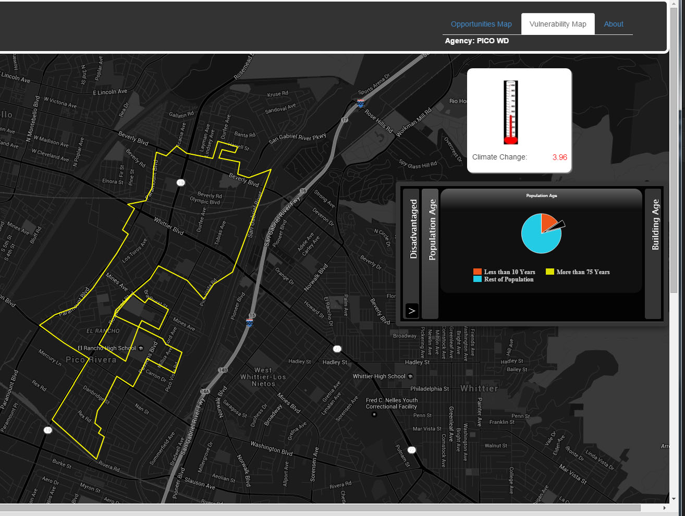
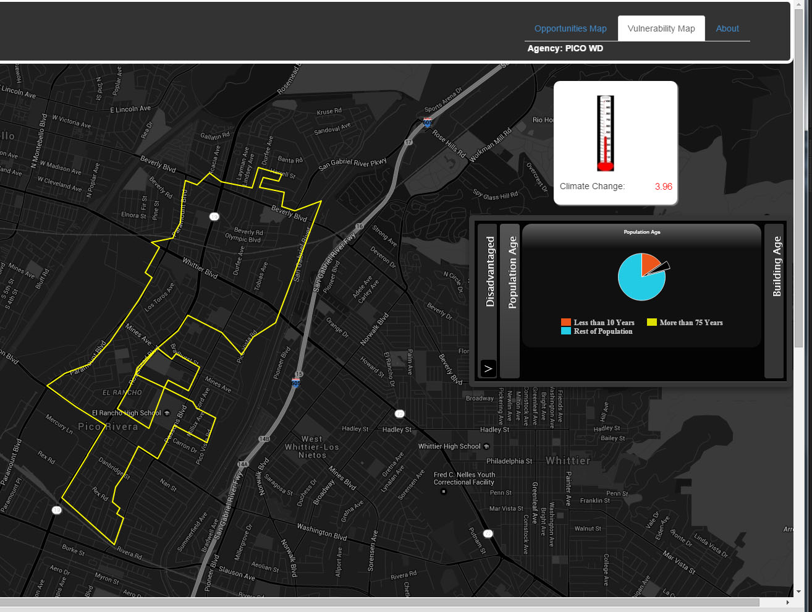

Images of the Application
The Building Intelligence Systems (BIS) is used by the Boston Fire Department to view potential hazards, violations, or open permits prior to arriving on a scene. This application is used as a safety precaution to fire fighters to decrease changes of injury and death to Boston's first responders. I worked with the Citywide Analytics Team on the project but was the project manager and a developer for the application.


 



I am fascinated by cartographic representations of data and digital story-telling. I work to articulate complex subject matter through visualization methods –using statistical programming, data analysis, GIS mapping, and web design to communicate important data patterns through graphical representations. Particularly I am motivated by research relating to urban discussions for equitable community development, social justice, and sustainability.
When I am not making maps, I like to surf, hike, and watch the Oprah Winfrey Show. Also, I read mystery novels and practice my backstroke, reliving high school swim relay races, whenever I get the chance.